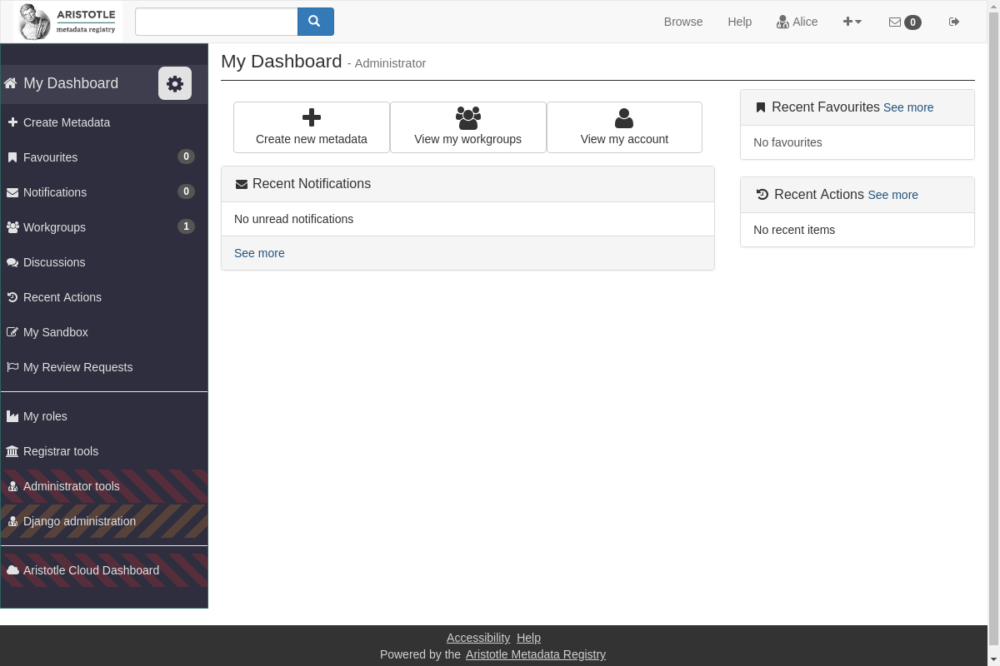
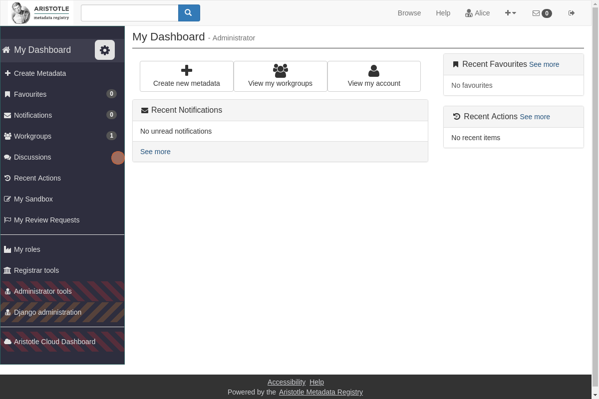
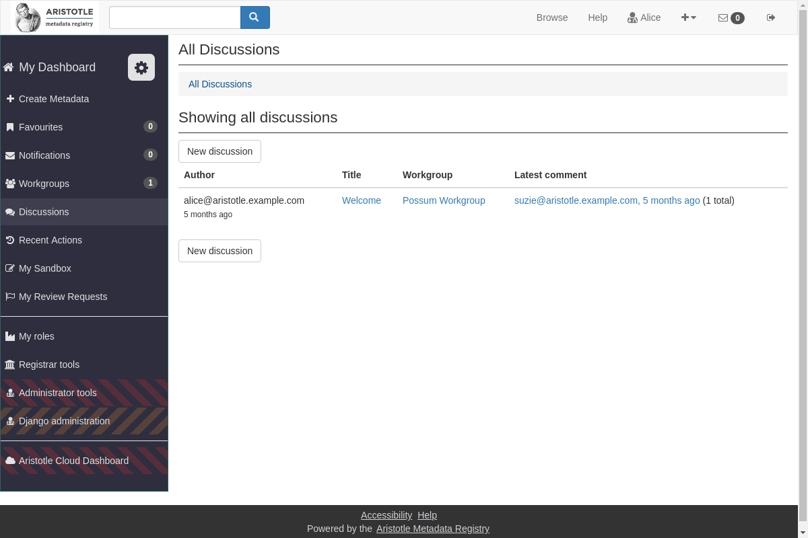
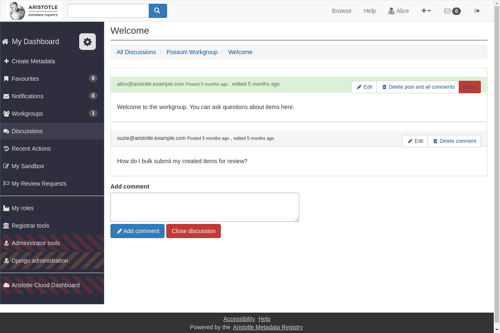
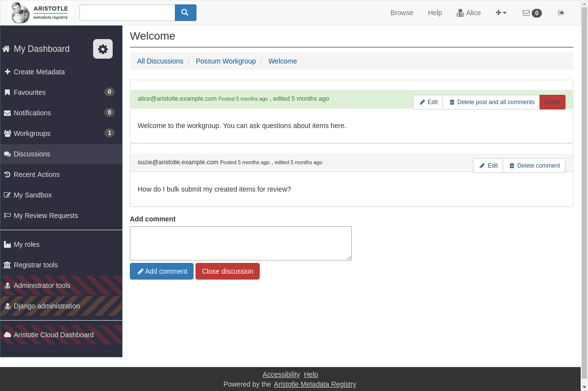
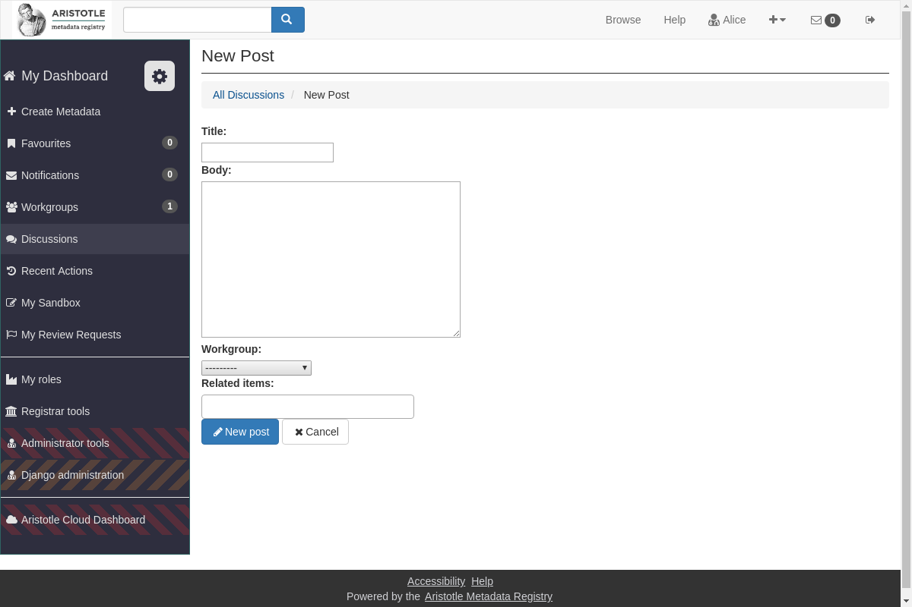
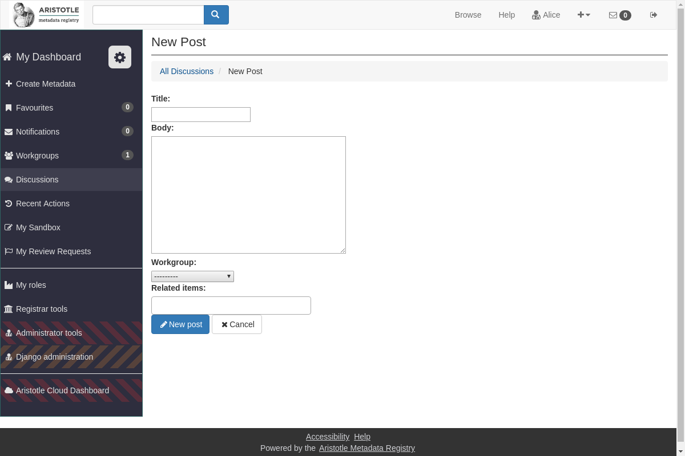

How to Create and Participate in Discussions¶
Attention
You can only see and create discussions of Workgroups you belong to
How to Create a new Discussion within a Workgroup¶
Go to you Dashboard
From here, you can select “Discussions” from your side panel
That will take you to your discussions you currently have in your different Workgroups, or you can create a new discussion here
To view a thread of the discussion and to post a comment on it yourself click on the “title” of the discussion
 

You can also create a new discussion thread from the “discussions” on the side panel
 
